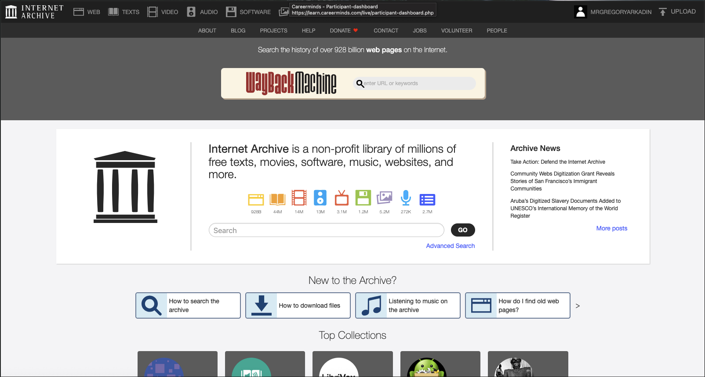

Minimalism vs. Maximalism in Web Page Design
Additional Information:
In the digital age, websites are more than just functional; how they are designed plays a crucial role in the user experience. A color theme can influence how users interact with the content, and how effectively they navigate through webpages. A well-designed website will keep people invested, with or without an algorithm feeding the user content. Two such websites are Archive.org and Reddit.com.

Archive.org, also known as the Internet Archive, is a nonprofit digital library that offers access to millions of archived web pages, books, movies, music, and other media. The site has a design that is at once somehow retro feeling and distinctly practical. It’s color choices evoke a sense of nostalgia and seriousness. It uses a combination of light beige, gray, and dark text colors which is appropriate, given it’s a platform focused on preserving historical data. The site's background is primarily a warm off-white or light gray, which helps create a neutral environment that doesn't take away from the content itself, with well-utilized whitespace. The overall color palette doesn’t distract from the content itself but instead emphasizes a sense of professionalism and gravitas, making it easier for users to focus on the wealth of information at their fingertips.
Which is in complete contrast, metaphorically and spiritually to Reddit, an online platform where users can submit content and engage in discussions. Reddit is organized into various subreddits (user-created communities), each with its own focus. As one of the most visited websites in the world, Reddit's color theme reflects its community oriented vibe. The most prominent color is red, especially in the logo. The red tone used is bright and energizing, evoking a sense of urgency. It’s often associated with excitement and passion in most corners of the world, which is fitting for a platform full of discussions and debates.

In other words, Archive.org utilize a minimalist approach, whereas Reddit uses a maximalist one. Archive.org focuses on clarity and simplicity, using colors that don’t compete with the content. This approach ensures that users can focus on research without being visually overwhelmed. Reddit, however, is designed to keep users engaged and encourage participation through bright colors and clear visual hierarchies. This is reflected in the dynamic design that changes depending on user interactions and upvotes.
The color schemes of these two websites not only enhance the user experience but also subtly reinforce the core purpose of each platform: one for research and preservation, the other for real-time social interaction and content sharing. By understanding the role color plays in shaping a website’s identity, we can better appreciate how design choices influence user behavior and engagement in the digital landscape.